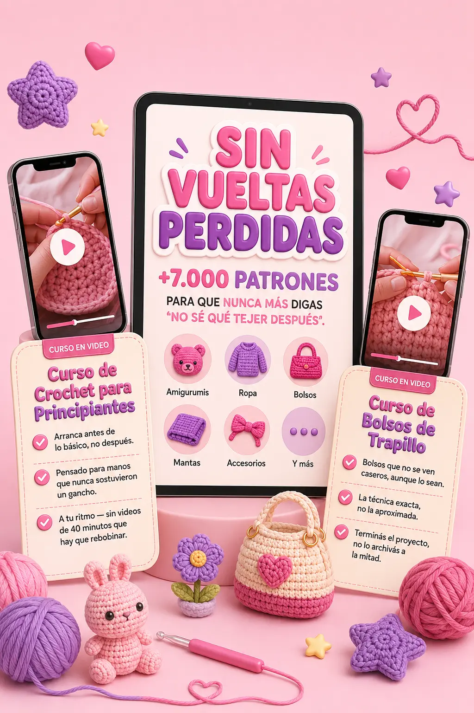

Nota: la opción control repite el patrón "hoy es el último día" del original — funciona para tráfico frío de un solo clic, pero pierde credibilidad si la misma visitante vuelve mañana y ve el mismo mensaje. La evergreen es más honesta y sostenible si esperás visitas repetidas o remarketing.
El sistema que organiza todo lo que necesitás para terminar tu primera pieza — sin traducir patrones, sin adivinar puntos, sin quince pestañas abiertas.

(y si te identificás con más de dos, seguí leyendo)
Buscaste "patrón de crochet fácil" y terminaste con quince pestañas abiertas y ninguna clara.
Empezaste una pieza con un patrón mal traducido y la abandonaste a mitad de camino.
Sabés tejer, pero se te acaban las ideas después del tercer proyecto.
Tus piezas nunca quedan como en la foto que las inspiró.
Ya gastaste plata en hilo y ganchillo, y no querés que se sume a la pila de intentos a medias.
No es que te falten manos para tejer. Es que aprendiste con material armado para alguien que ya sabía.
El problema no es tu destreza. Es dónde estás buscando.
Todo organizado por lo que realmente querés tejer, no por etiquetas vacías
"Vuelta" es una palabra que ya conocés si tejiste alguna vez: es cada fila que das con el ganchillo. Acá la usamos doble sentido: ninguna vuelta de más, ni tejiendo, ni buscando.
En vez de un curso genérico "lección 1 de 40", empezás eligiendo qué querés tejer hoy. El sistema te lleva directo al patrón correcto, con el video que muestra el punto exacto en el momento exacto — sin adivinar qué quiso decir una instrucción a medio traducir.
Vas a empezar aunque hoy no sepas ni sostener el ganchillo — el sistema arranca desde cero, no desde "ya deberías saber esto".
Vas a dejar de perder tiempo buscando en internet: todo está organizado en un solo lugar.
Vas a entender cada patrón, sin traducir a mano ni adivinar abreviaciones.
Vas a tener variedad real para no quedarte sin ideas después del tercer proyecto.
Vas a terminar lo que empezás — con confianza, no a ciegas.
+10.000 Patrones + Cursos en Video + 20 Recursos 🎁
Este precio se sostiene hasta el cierre de
Pasado este plazo, el precio vuelve a $37 USD fecha real de cierre, no un timer que se reinicia solo. Si no accedés, el cupo pasa a la siguiente persona en espera.
Nota de honestidad: no usamos un contador de "personas viendo esto ahora" — se descubrió que ese tipo de widget suele ser un número decorativo, no tráfico real. Si vas a limitar cupos, que sea por algo verdadero: acá los cupos limitan la capacidad real de soporte personal de la garantía (ver abajo), no el PDF en sí. completar con tu capacidad real por semana
🎁 Quiero el Sistema Sin Vueltas PerdidasPago único · sin suscripción · acceso inmediato por correo
| 🎒 Curso de Bolsos de Trapillo insignia | $47 |
| 📖 Biblioteca de +10.000 patrones | $37 |
| 🧶 Curso de Crochet para Principiantes | $27 |
| 🎁 5 bonos ancla + 15 recursos más | $36 |
| Valor total | $147 |
Ahorrás $132 USD · Hoy pagás solo $15 USD valores de ejemplo, ratio ~10:1 estilo Hormozi — reemplazar por tus costos reales
Justo después de ver el precio es cuando más importa: si algo no te queda claro, te lo resolvemos o te devolvemos tu plata.
Si entrás, buscás el patrón que necesitás y no lo encontrás claro, no te vamos a decir "no aplica por ser producto digital".
Te lo resolvemos directamente o te devolvemos tu plata. Así de simple.
*Ajustar el proceso exacto de devolución a lo que el negocio pueda sostener antes de publicar — la promesa tiene que ser 100% cumplible.
Cada uno resuelve una excusa puntual, no está de relleno
Guía de puntos esenciales — para no frenar en la primera fila.
Calculadora de hilos y materiales — para no comprar de más ni de menos.
Tabla de medidas y tallas — para que la ropa que tejas quede como se ve en la foto.
Cómo calcular el precio de lo que tejés — por si en algún momento querés vender.
Planificador de proyectos — para que nunca falten ideas para el próximo.
+ 20 recursos más — para que nunca te falte una excusa resuelta.
🛒 Quiero el Sistema Sin Vueltas PerdidasMismo botón, mismo color que el de la sección de precio — la repetición del mismo verde ayuda a que se reconozca de inmediato como "acá se compra", sin tener que pensarlo de nuevo.
Espacio para testimonios reales — no se completa hasta tener casos verificados
[Testimonio real con foto del resultado terminado — completar cuando existan clientas verificadas]
[Testimonio real con foto del resultado terminado]
[Reservá este tercer espacio para un testimonio real con algún matiz, no solo perfecto — le da más credibilidad al conjunto que tres reseñas idénticamente ideales]
LO MÁS PREGUNTADO
Resolvemos tus dudas antes de comprar — no después.
Más de 10.000 patrones organizados por lo que vos querés tejer, el curso insignia de Bolsos de Trapillo, el curso de Crochet para Principiantes, y los 20 recursos que resuelven las excusas más comunes para no empezar.
Sí — de hecho está pensado primero para vos. El curso guiado arranca antes de lo básico, no asume que ya sabés nada.
Acceso inmediato por correo electrónico después del pago. Entrás desde el celular, tablet o computadora, para siempre — sin esperar envíos.
Pago único. Sin suscripción, sin cobros al mes siguiente.
Sí. Una vez que entrás, es tuyo para siempre, sin fechas ni límites.
Sí, sin costo extra. Esto no se queda estático — se actualiza solo, sin que vuelvas a pagar.
Sí. Y por eso está el bono de cómo calcular precios — para el día que te pregunten "¿esto lo vendés?" y no te agarre sin saber qué responder.
Nota técnica: se usa <details>/<summary> nativo de HTML — la respuesta siempre está en el código fuente, solo se oculta visualmente hasta el clic. Nunca se carga por JS al momento de abrir. Esto corrige el hallazgo real del análisis original: una auditoría de DOM mostró que esos acordeones podían no traer la respuesta cargada, justo en la sección donde más importa antes de pagar.
[No generar este resumen a mano ni inventarlo — un resumen de IA solo es honesto si de verdad se generó a partir de reseñas reales existentes. Dejar vacío hasta tener volumen real de reseñas para resumir.]
✦ Resumido por IA solo si es real
[Reseña real — la frase más útil de cada reseña se puede resaltar con <mark>, pero solo si son palabras textuales de la clienta, nunca inventadas]
[Reseña real]
[Reseña real, idealmente una con un matiz genuino — "me costó al principio, pero..." — no solo elogio perfecto]
[Espacio reservado para una reseña real y honesta, no perfecta — no ocultar las críticas reales cuando existan; mostrar el mix completo es lo que le da credibilidad al conjunto]
Nota: no completar esta sección hasta tener una app de reseñas real conectada (Loox, Judge.me, Yotpo, reseñas nativas de Shopify). Un widget de reseñas falso es el tipo de cosa que, si se descubre, hace más daño a la confianza que no tener reseñas todavía.
o dejar de perder vueltas — las del ganchillo y las de las quince pestañas — y tener todo en un solo lugar, explicado para que realmente termines lo que empezás.
🎁 Quiero el Sistema Sin Vueltas Perdidas